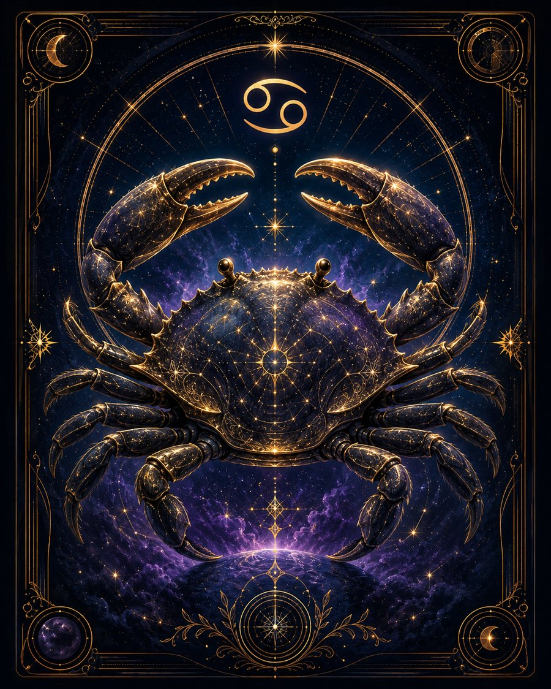

В двух словах
«Что это значит лично для меня?»
Какой это человек
Рак воспринимает мир эмоционально. Для него важно не только то, что произошло, но и то, что он почувствовал. Он нуждается в защищённости, личном пространстве, близких людях и ощущении дома. Часто хорошо заботится о других и тонко чувствует настроение окружающих.
Что ему движет
Потребность создать безопасное пространство — семью, дом, круг близких или внутреннее место, где можно быть собой.
Сильные стороны
Сочувствие, заботливость, память, интуиция, эмоциональная глубина, умение поддерживать и сохранять важное.
Слабые стороны
Обидчивость, тревожность, зависимость от настроения, склонность слишком долго хранить болезненные воспоминания.
В отношениях
Близость для него серьёзна. Ему важно ощущать не только любовь, но и эмоциональную безопасность, верность и принадлежность друг другу.
В работе и деньгах
Хорош в сферах, где нужны забота, сохранение, история, помощь людям, работа с домом, землёй, семьёй или сервисом.
Когда всё плохо
Закрывается и ждёт, что близкий сам догадается, что произошло.
Главное внутреннее противоречие
Очень хочет близости, но из-за страха быть раненым иногда первым закрывается от неё.
Это обобщённое описание солнечного знака, а не полный портрет человека. В реальной натальной карте характер зависит не только от Солнца, но и от других факторов.